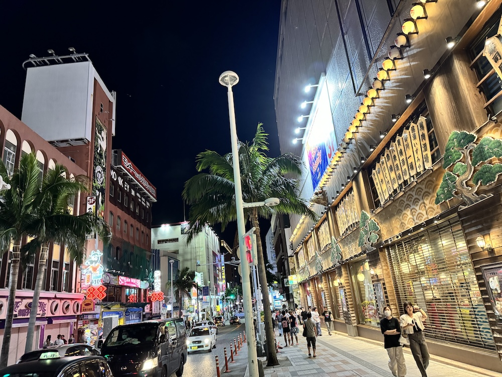
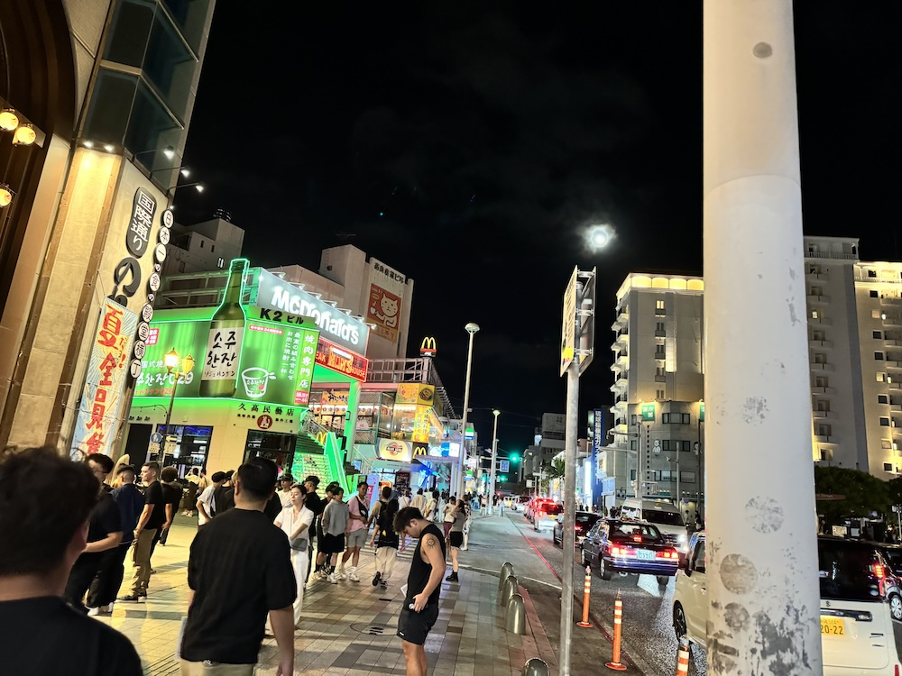
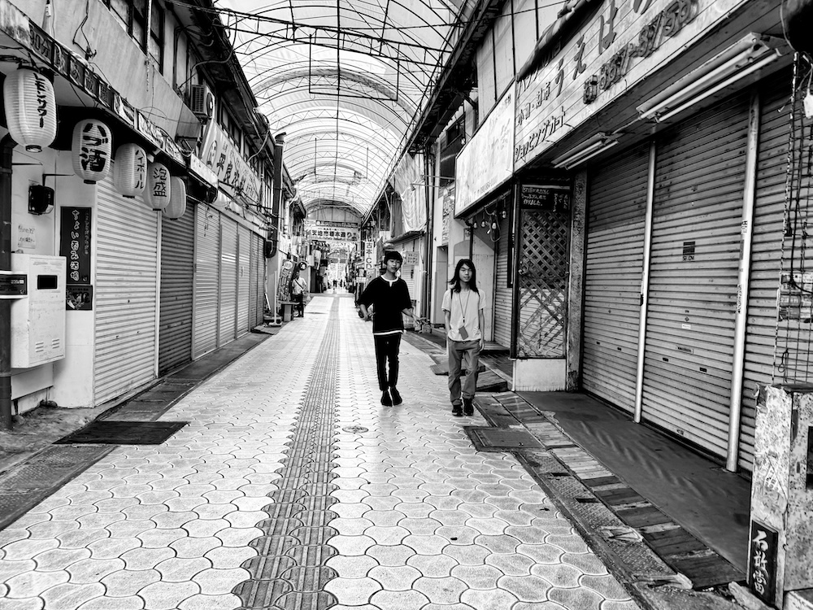

異世界転生感 - 2024/09/21 晴れ
久しぶりに国際通りを散策しました。
国際通り周辺エリアは、幼少期はこの近辺で育ったこともあり、すごく思い出も馴染みもあるところなのです。

ですが、街の人々の言葉が日本語ではありませんでした...。

遊び場だった商店街はシャッター街となり人気もなく、病院で目覚めたウォーキングデッドの主人公もこんな気持だったのかと思ってしまいます。

子どもたちがそこら辺にぎっしり遊んでいて、ホタルや赤とんぼを見ることもできた住宅街は廃墟になっていました。まるで違う世界に来たかのようです。

思い出の詰まった場所が時代とともに変わっていくのはとても寂しいものです。どうせ変わるなら異世界転生モノのように、思いっきりファンタジーな街並みに変わればいいのにと思った週末でした。